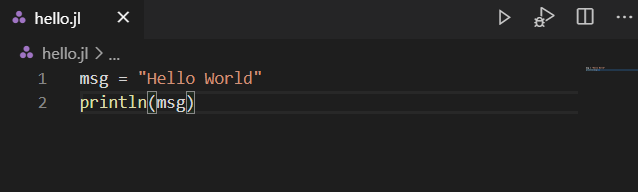
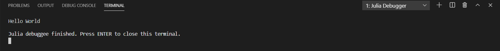

入门指南
本指南适用于刚开始接触Visual Studio Code扩展的新手或初级用户。入门任务将使用Julia编程语言在VS Code中创建一个“Hello World”程序。
先决条件
- Julia
- VS Code
- VS Code Julia 扩展
安装与配置
安装Julia
从Julia官网下载最新版本的Julia，根据你的平台选择相应的版本。
安装VS Code
根据你使用的平台，从VS Code官网下载并安装VS Code。
安装Julia扩展
- 启动或打开Visual Studio Code。
- 选择 View，然后点击 Extensions 打开扩展视图.
- 在市场搜索框中输入
julia。点击绿色的安装按钮以下载并安装扩展。
您已成功为VS Code下载了Julia扩展。
注意：建议在安装后重启VS Code。
配置Julia扩展
如果你在 Mac 或 Windows 上将 Julia 安装在标准位置，或者 Julia 二进制文件位于你的 PATH 中，那么 Julia 的 VS Code 扩展会自动找到你的 Julia 安装，无需配置扩展。继续进入下一部分。
如果 VS Code 扩展没有自动找到 Julia 安装，或者你想使用不同于默认的 Julia 安装，请使用以下步骤进行配置。
- 将
julia.executablePath设置为扩展应使用的 Julia 可执行文件的完整路径。 - 要编辑你的配置设置，请在 Mac 上选择菜单 Code，或在其他系统上选择 File，然后选择 Preferences，再点击 Settings。
- 确保用户设置中包含
julia.executablePath设置。
注意：字符串格式应遵循平台特定的约定。反斜杠 \ 是 JSON 中的转义字符，因此在 Windows 上使用 \\ 作为路径分隔符。
创建您的第一个 Julia Hello World 程序
- 在文件资源管理器工具栏中，点击
Hello文件夹上的 New File 按钮：

- 将文件命名为
hello.jl，它将自动在编辑器中打开。

.jl 文件扩展名告诉 VS Code 将此文件视为 Julia 程序，因此它会使用 Julia 扩展和所选的解释器来评估文件内容。
- 在
hello.jl中输入以下代码：
msg = "Hello World"
println(msg)运行 Hello World 程序
要运行 Hello World 程序，请点击编辑器右上方的终端按钮 Run: Julia File。

你可以在终端中看到相应的输出。

恭喜你！你已经完成了第一个 Julia 程序。